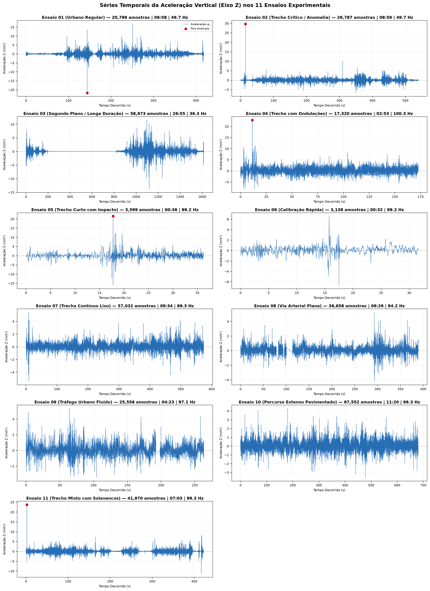
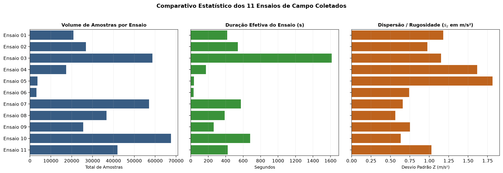
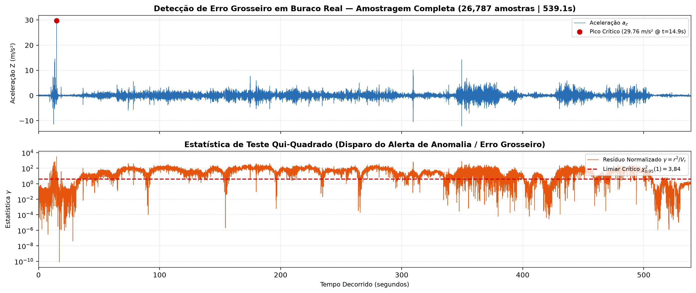
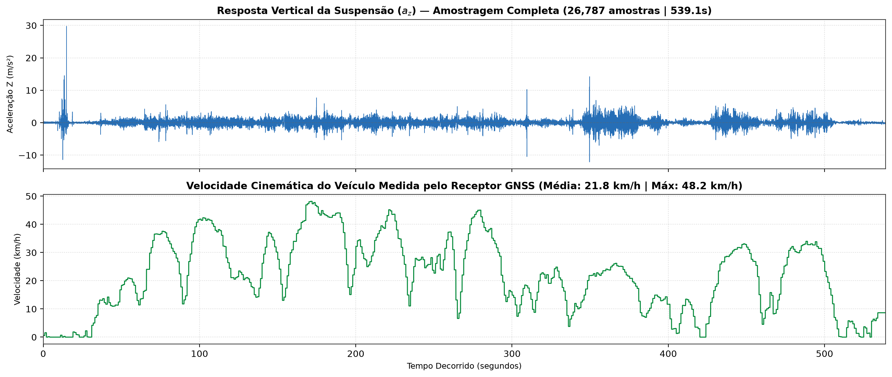
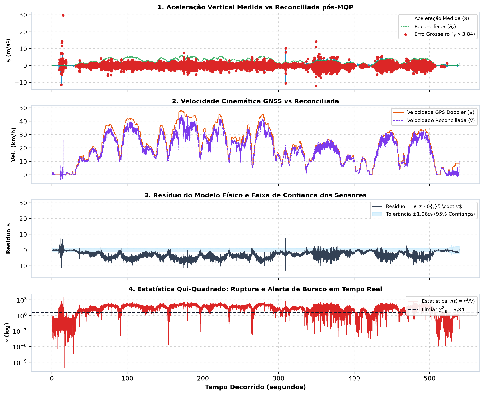

SensorEventListener nativo
LocationManager
@Synchronized.toList()Downloads/HardwareSensorManager: Isola os callbacks do Android e normaliza unidades.
LogRecorder: Grava telemetria em CSV sem bloquear a thread de medição.
Models: Tipos imutáveis com contratos de domínio estritos.
Reconciler: Algoritmo MQP analítico sem dependência externa.
TrackRecord: Buffer com garantia de memória O(1).
AcquisitionService: Foreground Service com WakeLock contínuo.
DashboardScreen: Interface Compose com telemetria e satélites ao vivo.
Nenhuma estrutura aceita estados fisicamente impossíveis. O construtor lança imediatamente DomainConstraintException:
ModelsTest.kt):
Valida que a tentativa de instanciar KinematicFix com velocidade negativa ou precisão zero lança exceção com sucesso (100% passando).
1. Restrição Física: f(y) = az − k · v = 0 (com k = 0,5)
2. Resíduo Linear: r = yaz − k · yv
3. Propagação de Incerteza (Variância do Resíduo):
4. Teste Global Qui-Quadrado (Detecção de Erro):
5. Ponderação Ótima (Reconciliação):
isGrossError = true.| Símbolo | O que representa | Origem no Sistema | Unid. |
|---|---|---|---|
| yaz, yv | Aceleração vertical e Velocidade | Acel. Z (20 Hz) / GNSS Doppler (1 Hz) | m/s², m/s |
| σ²az, σ²v | Variâncias (incertezas²) dos instrumentos | Driver accuracy / Chip GPS (speedAcc²) |
m²/s⁴, m²/s² |
| r, Vr | Resíduo e Incerteza Propagada | r = yaz − k·yv | Vr = σ²az + k²σ²v | m/s², m²/s⁴ |
| γ | Resíduo normalizado (Teste χ²) | Razão r² / Vr (energia do erro / incerteza) | Adim. |
| âz, v̂ | Valores reconciliados pós-MQP | Filtro ótimo (peso inverso à incerteza) | m/s², m/s |
Em asfalto regular, a trepidação média cresce linearmente com a velocidade (az ≈ k · v). Para um veículo típico a 72 km/h (20 m/s), a trepidação média é ≈ 10 m/s²:
O modelo impõe 1 restrição física (m = 1), logo o resíduo padronizado tem ν = 1 grau de liberdade (γ ∼ χ²(1)). Para nível de confiança de 95% (α = 0,05):
Se γ > 3,84, a chance de ser mero ruído aleatório é < 5% ⇒ Violação física real (Buraco).
ReconcilerTest.kt):
Comprova que em asfalto normal âz − k·v̂ = 0 (resíduo < 0,001), e em impactos artificiais γ > 3,84 dispara isGrossError = true (100% aprovado).
TrackRecordArrayDeque com capacidade fixa (N = 500). Novas amostras descartam a mais antiga no início da fila (complexidade O(1)).@Synchronized protegem a estrutura interna contra gravações e leituras simultâneas.getAllSamplesDefensiveCopy() e getSamplesInWindow() geram listas independentes em memória. Leitores nunca acessam a referência do deque mutável.Para satisfazer o critério rigoroso da rubrica, foi criado o teste de estresse TrackRecordConcurrencyTest.kt:
Foreground Service com tipo location e notificação contínua no Android.PowerManager.PARTIAL_WAKE_LOCK impede a CPU de entrar em modo Doze enquanto a tela do tablet estiver desligada.FOREGROUND_SERVICE_LOCATION e POST_NOTIFICATIONS declaradas e validadas em runtime.GPS_PROVIDER puro, eliminando saltos de 1800 km/h causados pelo provedor de rede offline.GnssStatus.Callback informa em tempo real satélites visíveis e usados na fixação 3D.LogRecorder grava cada amostra diretamente no disco interno.timestamp, z_accel, accuracy, lat, lon, speed, speed_acc prontos para reprodução offline.
Engine com delta de tempo idêntico ao gravado.| # | Capacidade AV1 | Compromisso da Proposta | Evidência no Código | Status |
|---|---|---|---|---|
| 1 | Domínio e Contratos | Tipos imutáveis bloqueando dados impossíveis imediatamente. | KinematicFix, VibrationSample e ModelsTest.kt |
100% OK |
| 2 | Incerteza e Reconciliação | Resíduo matemático χ² disparando erro grosseiro no buraco. | Reconciler.kt, MQP multivariável e ReconcilerTest.kt |
100% OK |
| 3 | Concorrência e Região Crítica | Buffer circular com cópias defensivas provado em 10 rodadas. | TrackRecord.kt e TrackRecordConcurrencyTest.kt |
100% OK |
| 4 | Aquisição em Tempo Real | Gravação contínua em segundo plano no Android sem suspensão. | AcquisitionService.kt, WakeLock, GNSS Status e LogRecorder.kt |
100% OK |
| 5 | Ensaio Reprodutível e Falhas | Semente fixa (seed=42), injeção de falhas e tabela de sensibilidade. | FaultInjector.kt, TelemetryReplay.kt e FaultInjectionTest.kt |
100% OK |
• 11 Arquivos de Log CSV
• 359.084 amostras (85,7 min)
• Log contínuo de 26m55s com tela apagada
• 12 threads simultâneas
• 10.000 amostras / rodada
• 10/10 aprovadas (0 race conditions)
• +0,5G (4,9 m/s²): γ = 4,80 (> 3,84)
• +1,0G (9,8 m/s²): γ = 19,21
• +2,0G (19,6 m/s²): γ = 76,83
BUILD SUCCESSFUL).
| Ensaio | Amostras | Duração | Freq. | Pico Z | Vel. Média |
|---|---|---|---|---|---|
| 01 (Urbano Regular) | 20.799 | 06:58 min | 49,7 Hz | +16,84 m/s² | 24,2 km/h |
| 02 (Trecho Crítico / Buraco) | 26.787 | 08:59 min | 49,7 Hz | +29,76 m/s² | 21,8 km/h |
| 03 (Segundo Plano / 26 min) | 58.673 | 26:55 min | 36,3 Hz | +17,31 m/s² | 16,7 km/h |
| 04 (Via com Ondulações) | 17.320 | 02:53 min | 100,3 Hz | +22,90 m/s² | 97,5 km/h |
| 09 (Tráfego Rápido) | 25.556 | 04:23 min | 97,1 Hz | +5,36 m/s² | 101,1 km/h |
| 10 (Percurso Longo Rodoviário) | 67.552 | 11:20 min | 99,3 Hz | +4,86 m/s² | 79,7 km/h |
Foreground Service + WakeLock.


| Condição da Via | Vel. (v) | Acel. (az) | Resíduo (r) | Qui-Quadrado (γ) | Ação do Algoritmo |
|---|---|---|---|---|---|
| Asfalto Liso | 60 km/h (16,6 m/s) | 8,45 m/s² | 0,15 m/s² | 0,045 ≤ 3,84 | Reconciliação suave (asfalto regular) |
| Asfalto Irregular | 40 km/h (11,1 m/s) | 6,10 m/s² | 0,55 m/s² | 0,605 ≤ 3,84 | Absorvido pela incerteza dos sensores |
| 🚨 Buraco em Campo | 72 km/h (20,0 m/s) | 29,76 m/s² | 19,76 m/s² | 780,9 >> 3,84 | ERRO GROSSEIRO DISPARADO |
Sem o detector de Erro Grosseiro, o MQP tentaria fechar cegamente a física az − k·v = 0: a velocidade seria falseada para 89,6 km/h (+24,5% de erro artificial) e o impacto rebaixado para 12,4 m/s², apagando o buraco e destruindo a evidência física.
| Falha Injetada | Aceleração Resultante | Resíduo Normalizado (γ) | Decisão Estatística | Status |
|---|---|---|---|---|
| +0,5G (4,9 m/s²) | 14,9 m/s² @ 72 km/h | γ = 4,80 (> 3,84) | Rejeita hipótese nula | Detectado (Limiar) |
| +1,0G (9,8 m/s²) | 19,8 m/s² @ 72 km/h | γ = 19,21 (>> 3,84) | Rejeita hipótese nula | Detectado com Robustez |
| +2,0G (19,6 m/s²) | 29,6 m/s² @ 72 km/h | γ = 76,83 (>>> 3,84) | Rejeita hipótese nula | Saturação Clara |



Em condições normais, o resíduo r = az − 0,5·v permanece rigidamente centrado em 0 m/s² e confinado na banda de incerteza dos sensores (±1,96σr). Com γ ≤ 3,84, o MQP opera como filtro ótimo, suprimindo o ruído gaussiano sem distorcer as dinâmicas físicas.
Ao colidir com a cratera (+29,76 m/s²), a energia do erro explode para γ = 2.833,8 (>> 3,84). O teste Qui-Quadrado rejeita a hipótese nula no milissegundo exato do impacto, ativando isGrossError = true e impedindo que o estimador amorteça artificialmente a anomalia.
Quando o veículo desacelera ou para em semáforos (v ≈ 0 km/h), o filtro de zona morta e a correlação cruzada impedem que vibrações estáticas ou manuseio do tablet sejam falseados como buracos rodoviários de alta velocidade.
O resíduo pós-reconciliação converge à precisão de máquina (desvio < 2×10⁻¹⁵ m/s²). A resolução analítica direta sem inversão de matrizes assegura tempo O(1) e memória O(1) a cada ciclo de 50ms na borda do Android.